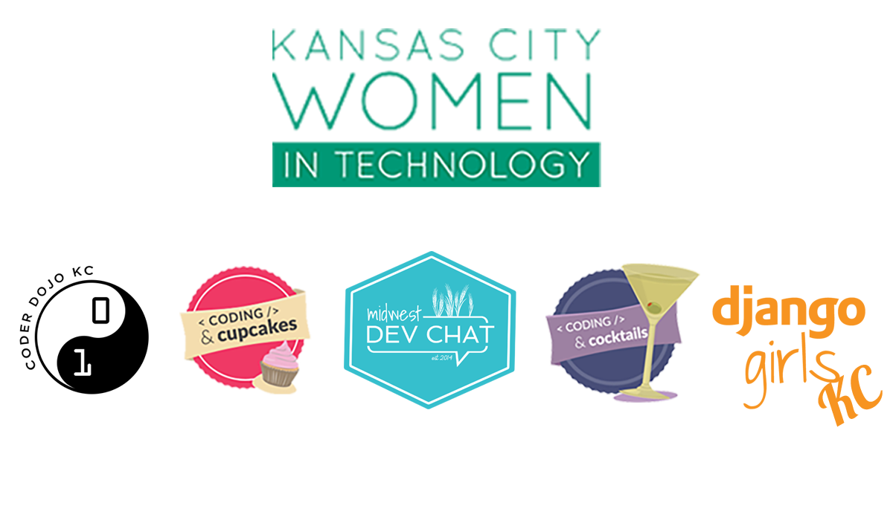
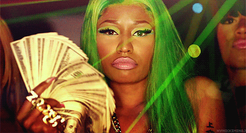
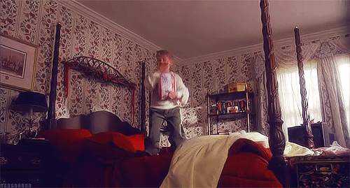
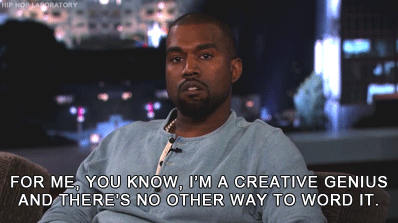
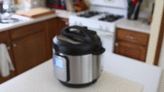
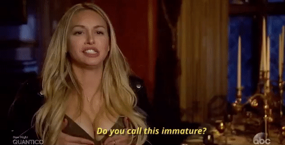
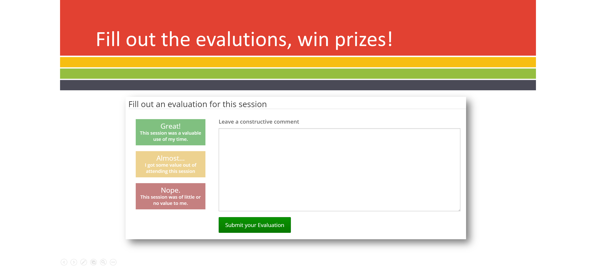

Hacking Your Work Life __ Balance to Take Over the World
Jennifer Wadella
Thanks to all our sponsors!
Jennifer Wadella
@likeOMGitsFEDAY
- 9-5 Software Engineer
- Nonprofit Founder/Director
- International Speaker
- Mentor
Programs I've launched
Work
Your trade - but mostly how you collect a paycheck.
Life
Everything you do when you're not at work.
"Blank"
Your passion.
Your Work
Job Execution
Skill Upgrading
Managing Others
Meetings, responding to emails, training, paperwork
Your Life
Household Management
Keeping a roof over your head
Financial Planning
Family
Health
Sleep
Hobbies
Relaxation

My work-life-blank plotted
Strategies
- Prioritizing
- Automating
- Balancing
- Finding Tools
- Recompensating
Strategy #1: Prioritize
Dwight D. Eisenhower
"I have two kinds of problems: the urgent and the important. The urgent are not important, and the important are never urgent."
| Urgent | Not Urgent | |
|
Important
|
Quadrant of Necessity
|
Quadrant of Quality &
|
|
Not Important
|
Quadrant of Deception
|
Quadrant of Waste
|
Eat the Frog First

“Eat a live frog first thing in the morning and nothing worse will happen to you the rest of the day.” - Mark Twain
Creative Workflow
Have a way to document creative thoughts as a placeholder
Unforseen Chaos
Murphy's Law
What can go wrong WILL go wrong
normal life
home catastrophe
Strategy #2: Automate
Like devops IRL
Autopay
Meal Prep
Cult of the Instant Pot
Buy me: Instant Pot on Amazon
Errand Hacks
- Avoid busy times
- Run errands when parents will be picking up their kids from school - my mom
Calendar Hacks
- Reminders
- Share calendars between family members
- Calendly
- Block off weeks around travel.
Email Hacks
- Snooze feature - Inbox by Google
- Automate responses
- IFTTT
life effort before automating
life effort after automating
Spend your time and energy on implemeting ideas & solving the big problems.
tl;dr - Find redundancies in your life and find ways to minimize them
Strategy #3: Find Balance
Get Enough Sleep

Know Your Productive Hours
Number of hours in a day isn't the problem, it's how many of those hours you feel productive during.
Prioritize Your Health
Learn to Say "No"

Remove Toxic Relationships
Eliminate Stressors

Turn Off Push Notifications.
Give Yourself A Break
True self-care is not salt baths and chocolate cake, it is making the choice to build a life you don’t need to regularly escape from.
Strategy #5: Use Tools & Processes
Hacking your work life __ balance IS a process.
Trello for everything.
Just kidding. Kind of.
But find a tool that works for you.
Strategy #6: Recompensate
rec·om·pen·sate
to pay or give compensation for; make restitution or requital for (damage, injury, or the like).
Get yoself a hobby
Have Guilty Pleasures
and don't feel guilty.
Plan Things You Look Forward To
Take Your Birthday OFF
🎂 🎂 🎂
Recap: Strategies
- Prioritizing
- Automating
- Balancing
- Finding Tools
- Recompensating
Leave speakers feedback - it's how they get better!
Questions?
Slides available at: tehfedaykin.github.io/CodingWithJewelbots
Social Life